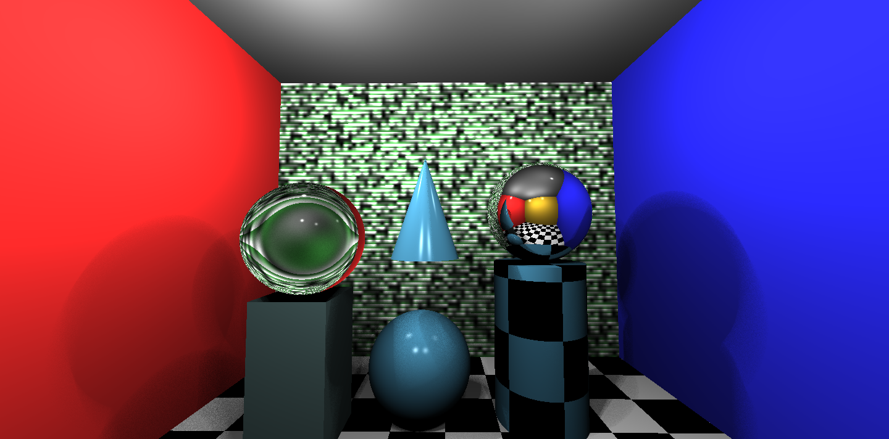
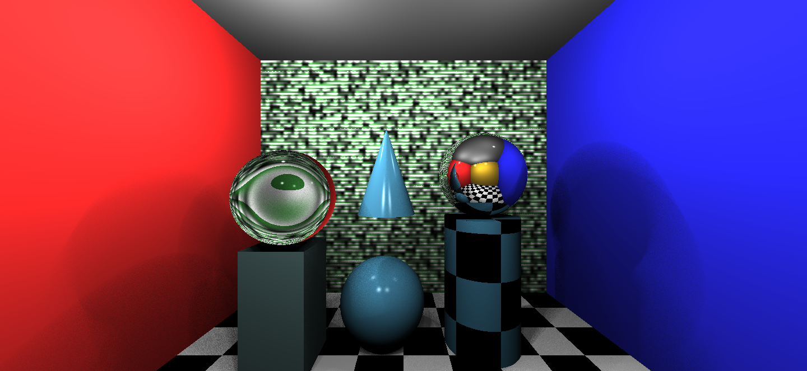
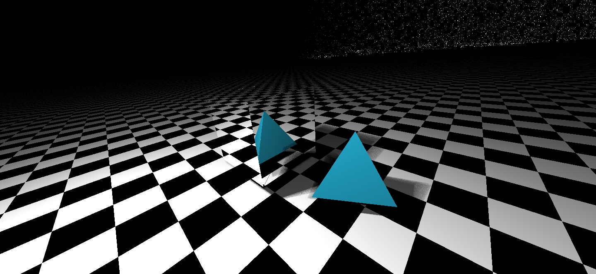
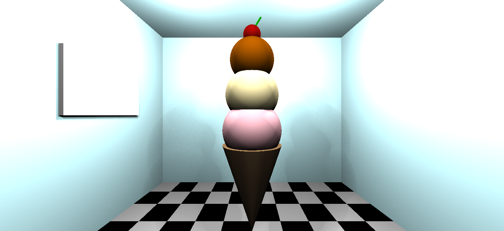
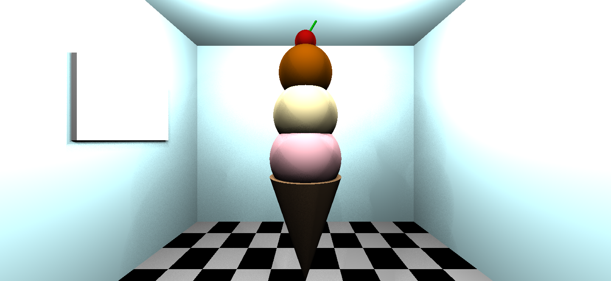

COS426 Assignment 3 Rendering Ray Tracer — Writeup
Switch to: Interactive Editor
- (2.0) TraceRay
- (2.0) Triangle
- (2.0) Sphere
- (2.5) Box
- (3.0) Cylinder
- (3.0) Cone
- (1.0) Shadows
- (3.0) Soft shadows
- (2.0) Transmission
- (1.0) Checkerboard
- (1.5) Phong material
- (1.5) Special material
- (1.0) Scene
- (2.0) Animate
- (1.0) Art Contest
- (0.0) Feedback
Default without Soft Shadows
View the result here.

Default with Soft Shadows

Mesh without Soft Shadows
View the result here.

Mesh with Soft Shadows
Ice Cream (my scene) without Soft Shadows
View the result here.

Ice Cream (my scene) with Soft Shadows (my scene)

TraceRay
For the first part of the assignment, I followed the provided
pseudocode to complete the traceRay and calculateColor
functions.
Triangle
For triangle intersection, I followed the provided pseudocode for the first implementation. I intersected the ray with a plane, and then I checked that the point was inside triangle algebraically.
Sphere
For sphere intersection, I followed the provided pseudocode for the geometric implementation.
Box
For axis-aligned box intersection, I used the following approach: (1) I created a helper function that took in the bounding points of the box as inputs and returned whether or not that point was inside the box. (2) I iterated over all of the box's sides. For each I intersected the ray with the relevant plane and determined if the intersection point lay inside the box. (3) I returned the closest of these intersections that was > EPS.
Cylinder
For cylinder intersection, I used the following approach: (1) I intersected the ray with the open cylinder using the provided equations. Then, I checked if the intersection was between the bounding planes. (2) I intersected the ray with the two caps (disks). (3) I returned the closest of these intersections that was > EPS.
Cone
For cone intersection, I used the following approach: (1) I intersected the ray with the open cone using the provided equations. Then, I checked if the intersection was between the bounding planes. (2) I intersected the ray with the two caps (disks). (3) I returned the closest of these intersections that was > EPS.
Shadows
To implement hard shadows, I used the following approach: (1) I generated a ray from the position to the light. (2) I found the intersection distance. (3) I checked the distance length; if the length was positive and before hitting the light (i.e. < the length of lightVector), I returned true because this meant that the point was in the shadow.
Soft shadows
To implement soft shadows, I used the pseudocode provided in the precept slides. I randomly sampled points with uniform density on the surface of a sphere around the light (distance in one direction at most k = 5 from the source). For each of these randomly sampled points, I cast a ray from the point in question to the sampled point. I computed the fractional contribution of that light to the point in question (i.e. the fraction of rays that made it through to the point). To generate a random number, I used the formula from the link provided in the assignment specification.
Transmission
I implemented transmission using Snell's Law and applying the formula for the resulting vector using the equation on the lecture slides.
Checkerboard
I implemented checkerboard by computing a value for the given point using the equation on the precept slides and tile size = 8. If the value was even, I returned black instead of mat.color.
Phong material
I implemented phong material using the equation provided in the lecture slides.
Special material
I created my special material using an implementation of noise that I found on GitHub (cited in my code).
Scene
I'm a huge fan of ice cream, and it's finally ice cream weather... so for my scene, I created an ice cream cone in an ice cream shop. I used mesh.json and default.json as examples as I designed my scene.
Animate
This is my animation. I added animation to spheres and cylinders to create the illusion of the ice cream falling into the cone. To do so, I added the code provided in the precept slides and played around with the constants to achieve my favorite distance moved & speed.
Art Contest
Please include my animated scene (above) in the art contest. See above for a description.
Feedback
This was my favorite assignment so far. I think that the past two assignments were really long and tedious, but this one was shorter, and I enjoyed completing it. Piazza was super helpful when I needed clarification; thanks for that! I probably spent about 10-12 hours on this assignment, which is a lot of time but signficantly more reasonable that the amount of time I spent on the others (probably 25-30 hours). That said, there were a few features that were difficult to implement because the instructions were somewhat unclear (especially checkerboard and phong, in my opinion).